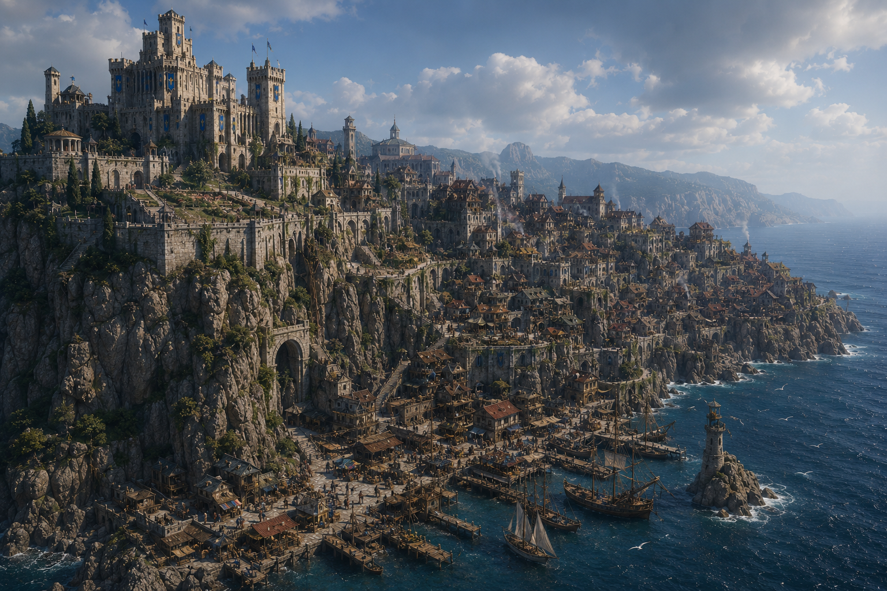

Clinging to the rugged cliffs of the northern shore of the Sea of Fallen Stars, the city of Lyrabar stretches nearly a mile along the steep rock faces, its stonework seamlessly woven into the natural contours of the precipice. Carved balconies, winding staircases, and bridges of weathered iron span the layers of the city, linking the distinct districts. At the highest point in the Noble District, the Citadel of the Stalwart King looms — a fortress of light granite, reinforced with steel beams drilled deep into the stone. Home to the city’s ruling elite and standing guard against both land and sea threats, the citadel bristles with watchtowers and ballistae aimed at the horizon. Below, and centrally located in the city, the Market District spills across terraces carved into the cliffside, bursting with vibrant stalls shaded by colorful awnings. Traders hawk salt-cured fish, enchanted trinkets, and exotic wares brought in by sea merchants, ensuring that the city remains well supplied.
At the base of the cliff, the Docks District extends onto wooden piers and stone jetties reinforced against the tide. Shipbuilders and fishermen work alongside smugglers and mercenaries, their livelihoods dictated by the whims of the sea. Archways, tunnels and hidden caves offer passage between the lower docks and the upper city, some officially sanctioned, others known only to those who deal in the shadows. Further up, perched upon a ledge of smooth stone, stands the High District, where the Temple of the Synod casts its watchful gaze over the waves. The temple’s domed sanctuaries and spires are carved in dedication to gods of the sea, moon, and fate. Priests and acolytes tend to the spiritual needs of sailors and rulers alike, their chants often lost to the crashing surf below. The Tower of the Sage rises higher than any other building in the city, its narrow stone spires crowned with observatories and glowing lanterns where a secluded cabal of learned wizards studies ancient lore and trains a carefully chosen circle of pupils in the disciplined pursuit of arcane knowledge. Though Lyrabar is narrow and precariously built, its people are as resilient as the rock they call home, thriving in the balance between land, sea, and sky.

A refined district of nobility and political influence.
Seat of governance and royal estates of Lyrabar.